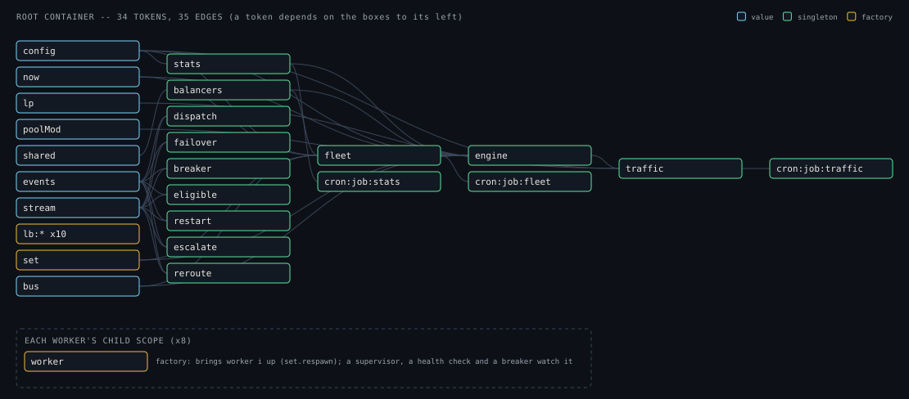

@zakkster/lite-pick — the capstone
A load balancer you can watch work.
Eight real workers doing real CPU work. lite-pick chooses who gets each request; per
worker a supervisor, a health check and a circuit breaker decide who is up; a supervisor heals what you break.
Every part is a published @zakkster/lite-* package, zero-allocation on the request path, and
gated in CI like a library.
The live system runs in this browser tab: eight Web Workers, about 2,000 requests a second. Kill one, slow one, make one flaky — and watch the decisions.
Or in a terminal
The same kernel over worker_threads, drawn by the same Pool Scope, with the same keys.
git clone https://github.com/PeshoVurtoleta/lite-pick
cd lite-pick/pickEcosystem/live
npm ci
npm run tuiWhat happens to one request
- arrive Open-loop traffic: Poisson arrivals at the offered rate, each with a Zipf-distributed key. Arrivals never wait for completions, so overload shows honestly.
- choose
lite-pickpicks a worker with the live strategy — one of ten, switchable under load — reading only who is eligible, who is busy and how fast each has been. - run
lite-worker-poolposts a ~1 ms job to that one worker: two slots and a capped queue each, results in order, one dead worker never takes the others down. - settle The result feeds the strategy (latency, occupancy), the worker's circuit breaker and the percentiles. A failure fails over once, to a different worker.
- heal Twenty times a second the fleet asks each worker's health check and breaker whether it may serve, and writes that — only that — into the balancer. A dead worker is restarted by its supervisor; a crash loop is escalated and kept out until reset.
- narrate Every breaker flip, rotation change, restart and failover is an event: the DECISIONS and REROUTES panels are that stream.
Try this in the live system
The composition, from the running container
Not a diagram someone drew: lite-di-graph exports the root container that bootKernel
builds, and one worker's child scope. CI regenerates it and fails if this picture is stale.

Every brick earns its place
Each package has one job here, and a test in pickEcosystem/live/test/ that fails if it stops
doing it.
Chooses the worker. Ten strategies over typed arrays, allocation-free per pick.
G3: one 10x-slow worker, p99 10 ms under PeakEWMA vs 340 ms under RoundRobin.
The workers: a job to a chosen worker, per-worker isolation, respawn, control values.
G2: kill a worker under load, no request lost. R1: 1000 respawns, all collected.
A Web Worker from a function (a Blob URL), transfer-only messages.
The browser smoke run boots eight of them in headless Chrome.
The composition root, and one child scope per worker.
R2: 200 scope rebuilds, every old scope collected. The graph above is its own.
Restarts a dead or hung worker; escalates a crash loop and keeps it out.
G6: escalated after five restarts, back after a reset.
Per-worker readiness: the READY handshake, no hung job, a healthy supervisor.
G5: a hung worker is out of rotation within 600 ms, then respawned.
Each worker's circuit breaker: closed, open, half-open with one probe.
G4: the breaker opens with no failed request and closes after healing.
The live strategy switch: a new balancer built cold, eligibility replayed.
G8: all ten switched under load, in-flight counts conserved.
Every decision as a numeric event, 0 B per emit; the decision stream.
A1: inside the zero-allocation steady state.
Traffic at 100 Hz, the fleet at 20 Hz, stats at 1 Hz — on an injected clock.
Every gate runs on a virtual clock, deterministically.
Graceful shutdown: drain, stop supervising, settle in-flight work, retire, exit code.
G7: exit code 0, every in-flight request settled, workers gone.
Exports the container's real wiring.
S2: the picture above is regenerated and compared in CI.
Latency percentiles (DDSketch, ±1%), end to end and per worker.
D3: a slow worker's p95 reads several times a normal one's.
The decision monitor, with lite-charts, lite-signal and
lite-adaptive's detectors. One renderer per surface, shared by the simulated and live
systems.
T1 / T2: the live TUI narrates every fault, byte-identically twice.
Measured
- 0
- scavenges over 960,000 requests on the request path (engine A, Node 26; two one-off on Node 22)
- ~2.9 KB
- per request on the ergonomic path (
/pool+ a promise each) — shown side by side, keye - 10 ms
- p99 with one worker 10x slow at 2,000 requests/s under PeakEWMA — LeastConn 30, P2C 40, RoundRobin 340
- 0 failed
- of ~16,000 requests over real threads with every fault injected once, one at a time
Gated like a library
This site is deployed only after every job passes:
- lite-pick itself — unit tests on Node 20/22/24 × three OSes, allocation gates (with V8 inlining on and off), torture, benchmarks, the packed tarball's types.
- the kernel — ten scenario gates, each with a control that must fail; allocation rate by scavenge count; retention after 1000 respawns; the same gates against lite-pick's working tree.
- the surfaces — the TUI scripted and compared byte for byte; the import map pinned to
package.jsonboth ways; a 20-second run over real threads; this site, built exactly as deployed, driven in headless Chrome through its own keys.